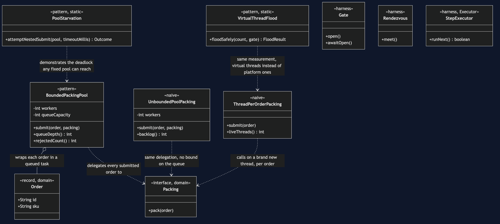
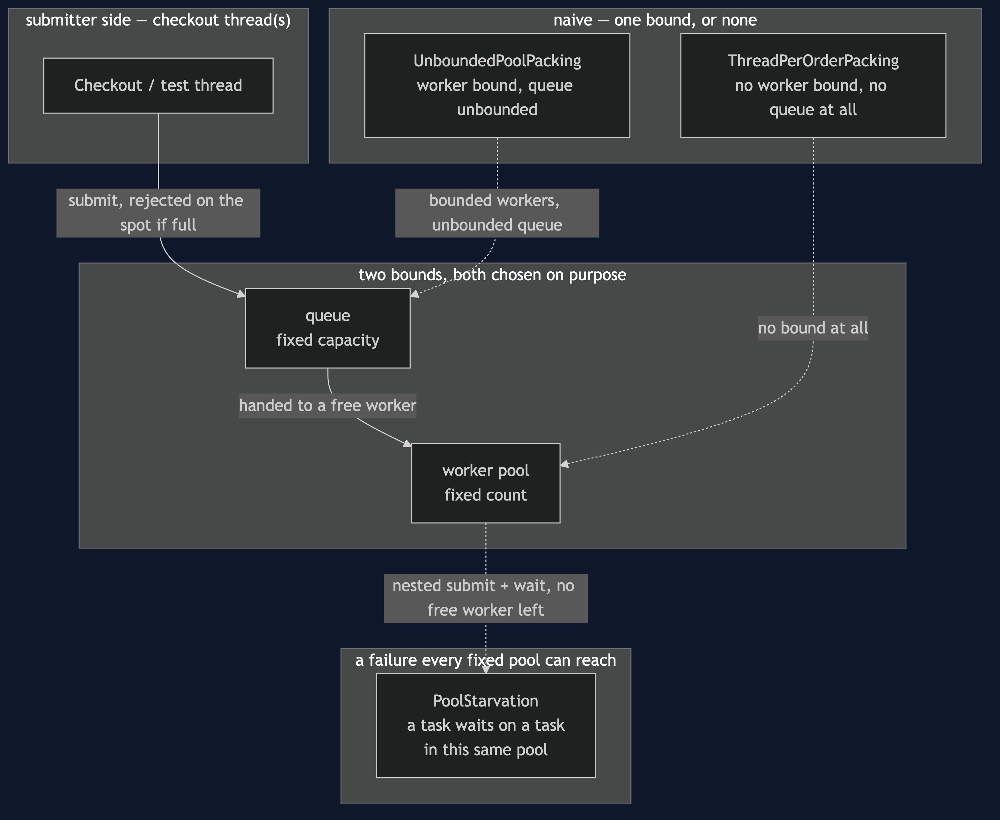
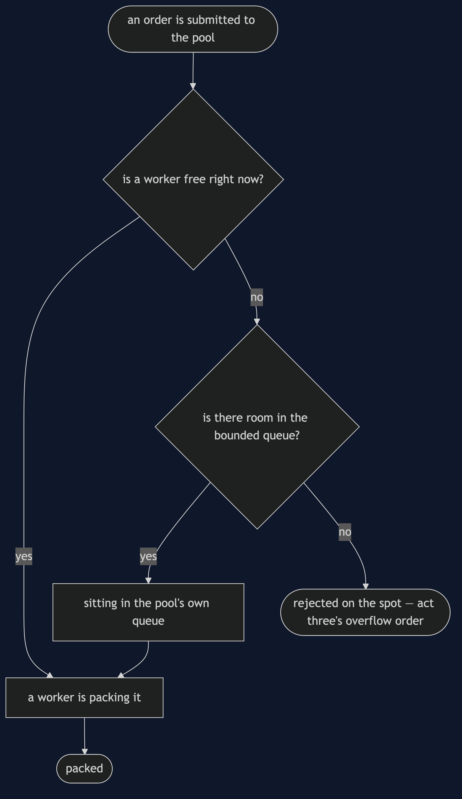
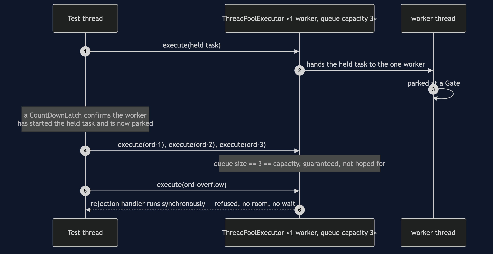
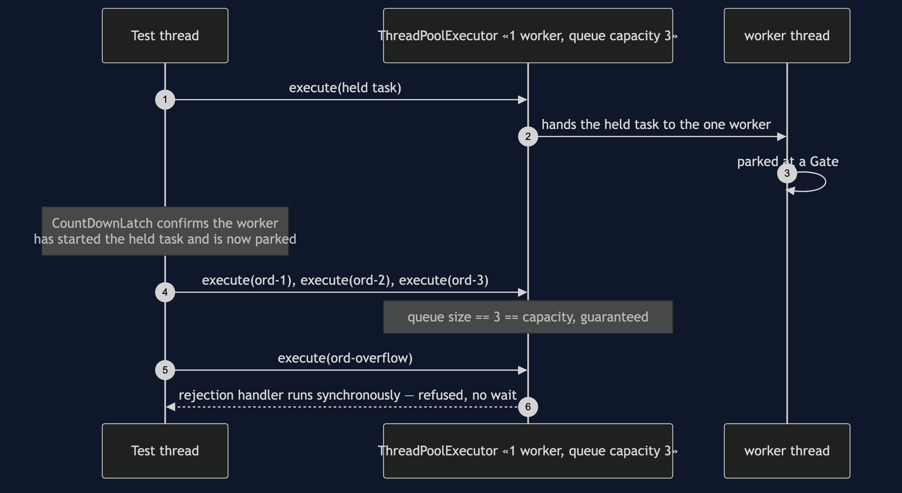
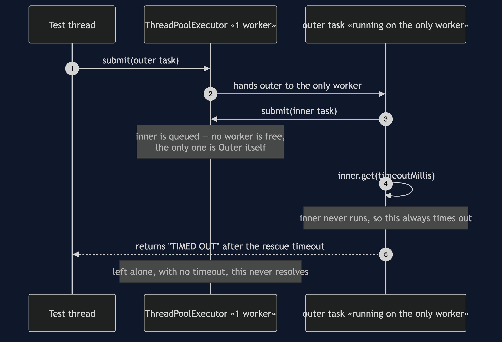
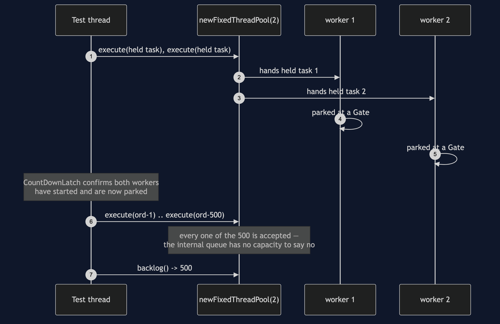

Thread Pool Pattern
src/main/java/com/jk/explore/threadpool/
├── PackingTeamDemo.java composition root — the six acts
│
├── domain/ ← reused unchanged from §46
│ ├── Order.java record(id, sku)
│ └── Packing.java «functional interface» pack(order)
├── harness/ ← reused unchanged from §46
│ ├── Gate.java
│ ├── Rendezvous.java
│ └── StepExecutor.java
├── naive/ ← one bound, or none
│ ├── ThreadPerOrderPacking.java no worker bound, no queue at all
│ └── UnboundedPoolPacking.java bounded workers, unbounded queue
│
└── pattern/ ← the real thing
├── BoundedPackingPool.java two bounds: workers, and queue capacity
├── PoolStarvation.java the deadlock any fixed pool can reach
└── VirtualThreadFlood.java Java's answer, measured honestlyA fixed, small number of worker threads is created once and reused for every task handed to it, pulling from a queue whose own capacity is also chosen on purpose — not one bound, but two.
This is the second project in concurrency-design-patterns, picking up directly from Producer–Consumer's queue and harness: the packer becomes a team, and a team needs a second decision the first project never had to make.
Run
./gradlew runSix acts.
Act one is the identical thread-per-order failure, from the team's side.
ONE. A thread per order — the same cost §46 measured, from the team's side.
created 2,000 real threads in 98.1ms (49.1 microseconds each)
every thread is live and holding a stack until its order is packed —
nothing here caps how many pile up if orders outpace packing.Act two is the trap the JDK's own factory method hides.
TWO. A fixed pool with the queue nobody chose — the default trap.
2 workers, both provably busy; 500 more orders submitted
Executors.newFixedThreadPool never blocked and never rejected once
backlog waiting behind the 2 busy workers: 500
nothing anywhere would have told you that number until you asked.Act three is the pattern — two bounds, both chosen on purpose, and a rejection with no patience window.
THREE. The pattern — a bound on workers, and a bound on the queue.
1 worker busy, queue filled to capacity 3: 3
one more order, submitted with the worker busy and the queue full: REJECTED on the spot — no patience window, no roomAct four is the bill for sizing, in both directions.
FOUR. Sizing the pool is a real decision, both directions.
too few workers: the queue in act two grew by 500 before anyone asked why.
too many workers: each one is a stack, same cost as act one, just capped.
there is no size that is free; there is only a size chosen on purpose.Act five is a deadlock any fixed pool can reach, at any size.
FIVE. Pool starvation — a task waiting on a task in its own pool.
a fixed pool of 1: the running task submits a second task to that
same pool and waits for its result — no free worker will ever run it.
starved: true, rescued after 210ms by a demonstration timeout; left alone, this never resolves.Act six is Java's answer, measured honestly against act one.
SIX. Java's answer — virtual threads change the creation cost, not the bound.
created 2,000 virtual threads in 11.4ms (5.68 microseconds each)
compare act one: same count, real platform threads, measured the same way.
cheap thread-per-task is viable again for blocking I/O — but a pool still
bounds a resource, not a thread count; a downstream limit of ten stays ten
connections wide no matter how many virtual threads ask for one.Test
./gradlew testSeven test classes, 11 test methods between them, several run twenty times each via @RepeatedTest — 125 executions total, zero of them using Thread.sleep to wait for another thread. BoundedPackingPoolTest proves both bounds are reached deterministically; PoolStarvationTest proves the deadlock always starves at pool size one and never at pool size two; UnboundedPoolPackingTest proves the hidden trap with a real, exact backlog number rather than a claim.
Technologies and versions
| What | Version | Why it is here |
|---|---|---|
| Java | 21 | The repository standard, via the Gradle toolchain block — also what act six's virtual threads need |
| Gradle | 9.2.1 | The wrapper in this directory; no separate install needed |
| JUnit 5 | 5.10.2 | Test runner — @RepeatedTest is how this project proves a race, not merely exercises it |
No ArchUnit, no Spring, no framework of any kind. java.util.concurrent is this category's entire subject, including ThreadPoolExecutor itself — the pattern class wraps it directly rather than reimplementing it.
Learning Material
| Document | What it covers |
|---|---|
docs/problem-statement.md | The naive versions, continued from §46, and what the pattern has to deliver |
docs/thread-pool-pattern-explained.md | Two bounds, rejection with no patience, the starvation deadlock, virtual threads |
docs/determinism.md | How each scenario is forced, and the one that needs no forcing at all |
docs/class-diagram.md | The types, and the two bounds BoundedPackingPool owns |
docs/architecture-diagram.md | Where each piece runs, and the failure that reaches back into the worker box |
docs/data-flow-diagram.md | One order, submitted to packed or rejected on the spot |
docs/sequence-diagram.md | Who calls whom, in order — written for a listener with the screen off |
docs/uml-diagram.md | Four sequences: capacity reached, pool starvation, the unbounded trap, the harness's own proof |
docs/animation.html | The six acts in a browser |
docs/prerequisites.md | What you need to know, including what §46 already covered |
docs/session.md | A one-hour taught session with exercises |
docs/spec.md | The generated specification, with measured test counts and timings |
docs/youtube.md | Title, description and chapters for the video |
The pattern in one picture
The single most important thing on this diagram: BoundedPackingPool owns two bounds, not one — workers and queueCapacity — and both are constructor arguments, chosen on purpose, rather than defaults buried inside a factory method.

Where each piece runs
Two boxes stand between submission and packing, not one — and the starvation deadlock points back into the worker box itself, not around it.

How one order moves
There is no patience step: a submission either finds room immediately or it is refused, in the same call.

Who calls whom, in order
The sequence written to work with the screen off: a test thread parks a pool's one worker mid-task behind a closed gate, confirms with a latch — not a guess — that it is truly stuck there, fills the queue to its capacity of three, and watches a fourth submission refused inside the very call that made it.

All four sequences
The full set from docs/uml-diagram.md.
One. The pool's queue reaches capacity, and says no.

Two. Pool starvation — a task waiting on a task in its own pool. No forcing needed: a pool of one worker waiting on itself has exactly one outcome.

Three. The unbounded-queue trap — a backlog with no ceiling. Five hundred submissions, every one accepted, with two workers both provably elsewhere.

Four. The harness's own proof — a lost update, every run. The same mechanism §46 built, proven again before this project's own acts rely on it.

Video
The narrated walkthrough is built from video/scenes.py by video/build_video.sh. The rendered file is not committed — see the repository README for why.
When this is too much
Worth it the moment more than one worker genuinely helps — CPU-bound work that can run in parallel, or I/O-bound work under Java's traditional platform-thread model where creation cost matters. Not worth it for a single background task that runs once; a pool sized for concurrency it will never use is ceremony with nothing to bound.
Where this sits
This is the second of six projects in concurrency-design-patterns, reusing §46's queue idea, domain and harness directly rather than re-deriving them.
The next project, Future/Promise, answers a question this project leaves open on purpose: once a worker has taken an order, how does the caller ever find out the result.
Also available with a framework
Thread Pool with Spring Pattern reruns this idea on a real framework, and shows what the framework adds and where it can undo the pattern. Watch this project first.